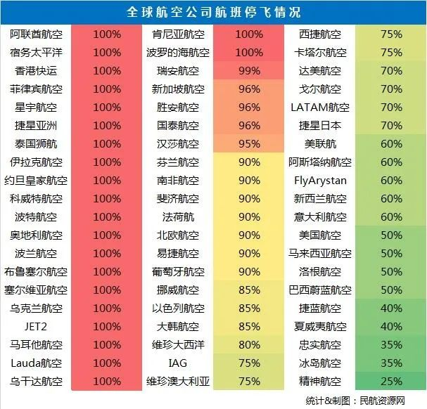

全球航空公司普遍削减运力，超过30家停飞
原文链接 备份链接 记者：陈晓双 “ 国际航空运输协会预计，2020年全球航空公司客运收入损失高达1130亿美元。 ” 受疫情影响，至少30个国家和地区采取了入境限制措施，加之客运需求锐减，航空公司不得不缩减运力，许多航空公司甚至停飞航 …
澎湃新闻记者 姚晓岚 综合报道
随着新型冠状病毒疫情蔓延，各国陆续出台旅行限制令，不少航空公司开始削减或停飞航班。
截至北京时间3月23日晚间，据各大航司官网和新闻媒体公布的数据不完全统计，已有超过20家航空公司全线停飞所有航班。
此外，据民航资源网不完全统计，还有12家航空公司仅停飞了所有国际航线，包括——越南航空、南非航空、阿维安卡航空、巴基斯坦航空、曼谷航空、澳航、维珍澳大利亚、西捷航空、沙特阿拉伯航空、阿尔及利亚航空、马印航空以及Swoop航空。
由此计算，超过30家航空公司已停飞所有国际航线。

此外，澎湃新闻记者也注意到，还有一些航空公司也宣布了相关点对点停航举措，如越南航空自当地时间3月18日起，暂停越南与法国之间的来往航班。3月18日至3月31日期间越南航空公司往返于马来西亚的航班也通告暂时停飞。
也有相关国家下达的点对点停航指令，如阿尔及利亚总理杰拉德3月16日指示阿公共工程及交通部暂时停飞往返五个阿拉伯国家的航班，以应对新冠肺炎疫情。这五个国家是：突尼斯、埃及、阿联酋、卡塔尔和约旦。
阿联酋航空
当地时间3月23日上午8:30，阿联酋航空在官网刊发最新声明称，根据阿联酋政府的指示，从2020年3月25日起，阿联酋航空将暂停所有客运服务两个星期。
阿联酋航空方面称，对于给客户和旅客带来的不便深表歉意。采取以上措施主要是遏制新冠肺炎的传播，公司希望能够尽快恢复服务。
据央视新闻客户端消息，当地时间3月23日，阿联酋国家紧急危机与灾难管理局以及民航总局发表声明称，为了应对新冠肺炎疫情，所有进出港的客运航班和过境阿联酋转机的客运航班将暂停两周，该决定将在48小时内生效。
阿联酋民航总局说，货运航班和紧急疏散航班不在此次停航的范围内。声明表示，如果航班恢复飞行，将采取进一步的检查和隔离措施，以确保乘客，机组人员和机场人员的安全，保护他们免受感染的危险。
土耳其航空
土耳其航空公司首席执行官于当地时间上周日表示，自3月27日起，除飞往中国香港、莫斯科、埃塞俄比亚、纽约和华盛顿的国际航班外，土耳其航空公司将停止所有国际航班。此外，其国内航班仍将继续运营。
据央视新闻客户端消息，当地时间3月21日，土耳其交通和基础设施部宣布，从当天晚上开始暂停与46个国家间的航班。此前，土耳其已经停飞22个国家的航班，至此，土耳其已经宣布停飞68个国家航班。21日，土耳其政府还宣布禁止野餐和烧烤，所有理发店、美容院当天18点开始暂停营业。目前，土耳其新冠肺炎累计确诊病例达到670例，累计死亡9例。
俄罗斯
据新华社消息，俄罗斯联邦航空运输署网站22日发布公告说，俄23日起将暂停大部分飞往其他国家的航班。公告说，根据俄政府指令，从莫斯科时间23日零时起，除莫斯科往返部分国家首都航班以及撤侨包机外，俄将暂停飞往其他国家的所有航班。网站列出了不受禁令限制的航班。
13日，俄罗斯主要航空公司宣布暂停往返意大利、法国、德国和西班牙的部分航班。此前，俄主要航空公司已暂停往返其他疫情严重国家的航班。
尼日利亚
据央视新闻客户端消息，3月21日，尼日利亚民航局决定自3月23日起至4月23日，关闭尼日利亚首都阿布贾国际机场和拉各斯国际机场，停飞国际航班，此前尼民航部门已要求3月21日起关闭尼境内的另外3个国际机场，至此尼日利亚将禁止所有国际航班进入，尼国内航班仍可继续运行。
伊拉克
据央视新闻报道，当地时间3月17日，伊拉克交通运输部宣布，即日起至3月24日，其下属的伊拉克航空的国内外所有航线暂停运营。交通运输部将以世卫组织建议为标准，全力阻止新冠肺炎疫情在伊拉克暴发。
安哥拉
据央视新闻客户端，为防范新冠肺炎疫情，安哥拉将于3月20日零时起，停飞所有国际航班，关闭与邻国的陆路口岸，并禁止客轮在安港口停靠或上下人员。有关措施有效期暂定15天，可视情延长。对于20日零时前入境的人员，实行居家自我隔离至少14天。
非洲
据参考消息援引美联社报道，在津巴布韦宣布首例确诊病例后，非洲两大航空公司于3月20日宣布全面取消国际航班，非洲焦虑加剧。南非航空公司停飞所有国际航班至6月份，埃塞俄比亚航空公司取消了30个国家的航班。
此外，据央视新闻客户端，摩洛哥拉巴特-塞勒国际机场于3月19日关闭，其他摩洛哥国际机场也于当周内陆续关闭。摩洛哥于3月15日宣布暂时停飞所有国际航班，造成数千名外国游客滞留。摩洛哥政府随后宣布将与相应国家协商，安排特别航班帮助滞留游客回国。在3月21日最后一架航班离境后，摩洛哥将于当晚正式对外关闭其空域。
据人民日报，埃及总理马德布利3月16日宣布，出于防控新冠病毒肺炎需要，埃及将于3月19日-3月31日间停飞所有国际航班。
澳大利亚
据澎湃新闻此前报道，3月18日，据路透社报道，澳大利亚第二大航空公司维珍澳大利亚航空3月18日宣布，由于政府旅行限制和新冠肺炎疫情带来的需求下降，将暂停3月30日至6月14日期间的所有国际航班，并将其国内运力减少一半。
澳洲航空及旗下捷星航空随后也宣布：2/3的员工将从3月末到至少5月末暂时离开工作岗位，这意味着约2万人短期失业。在澳大利亚联邦政府宣布所有公民避免国际旅行后，澳洲航空已停飞了所有国际航班。目前，澳航有超过150架飞机暂时停飞，其中包括其空客A380，波音747、787等多款机型。
菲律宾
据中新网援引外媒报道，当地时间3月17日，菲律宾宿务太平洋航空宣布，将从3月19日至4月14日，取消所有国内及国际航班。该航空公司在社交媒体上称，取消航班的措施是为了支持“政府应对新冠肺炎疫情的管控”。已预订该时段航班的旅客可以退票或改签，免收票价差额。
加拿大西捷航空
加拿大第二大航空公司——西捷航空公司（WestJet）当地时间3月16日晚宣布，鉴于新冠肺炎疫情的暴发，以及加拿大政府的要求，公司将从当地时间3月22日晚上11:59（北京时间3月23日下午1:59）开始，停飞旗下所有的国际航班和来往于加拿大和美国之间的跨境航班。停飞时间为30天。
声明同时宣布，从即日起，所有国际和往来加美两国之间的航班机票均不再销售。声明称，停飞商业航班后，公司将配合加拿大政府执行撤侨和救援的任务。
阿尔及利亚
阿尔及利亚总理杰拉德3月16日指示阿公共工程及交通部暂时停飞往返五个阿拉伯国家的航班，以应对新冠肺炎疫情。这五个国家是：突尼斯、埃及、阿联酋、卡塔尔和约旦。停飞时间将从3月17日开始，具体复航时间另行通知。来自总理府的新闻公报说，相应的航空公司将负责安置和接回滞留在这五国的阿尔及利亚公民。
越南航空
越南航空自当地时间3月18日起暂停越南与法国之间的来往航班。此外，当地时间3月17日夜间越南航空飞往法国的航班也被取消。3月18日至3月31日期间越南航空公司往返于马来西亚的航班也通告暂时停飞。
巴西GOL航空
巴西GOL航空公司称，将从3月23日至6月30日暂停所有国际航班。
奥地利航空
奥地利航空自3月18日起，将暂时停飞定期航班运营，直到3月28日为止。
波罗的海航空
波罗的海航空将自3月17日起暂停所有航班，包括国际航班，直到4月中旬。
新加坡航空
3月23日，新加坡航空宣布将减少96%原计划至4月底的航班运力，以积极应对世界各国在过去一周为控制新型冠状病毒蔓延而采取的封闭边境管控措施。
这一决策意味着由147架飞机组成的新航及胜安航空机队中，有138架飞机将停飞，这是新航集团自成立以来所面临的最大挑战。
新航集团旗下的低成本航空公司酷航也将暂停大部分航线网络，49架飞机的机队中将有47架飞机停飞。
新加坡航空方面表示，新航集团采取多元化经营网络，成立酷航以分散风险并满足不同乘客的需求。然而，由于没有国内航班，当国际市场升级严控旅客流动或者同时禁止航空旅行时，集团旗下的航空公司变得更加脆弱。目前各国边境封锁管制何时能解除尚存不确定性，因此新航集团恢复正常运营的时间尚不明确。由此造成的航空旅行需求锐减导致了新航客运收入大幅下滑。
戳这里进入
“全国新型冠状病毒感染病例实时地图”↓↓
本期编辑 周玉华
推荐阅读


原文链接 备份链接 记者：陈晓双 “ 国际航空运输协会预计，2020年全球航空公司客运收入损失高达1130亿美元。 ” 受疫情影响，至少30个国家和地区采取了入境限制措施，加之客运需求锐减，航空公司不得不缩减运力，许多航空公司甚至停飞航 …
原文链接 备份链接 疫情影响下航空客流大幅下滑 航空公司面临较大经营压力 随着疫情在多国蔓延，全球对航空旅行的需求急剧下降，这使很多本就苦苦挣扎的航空公司陷入困境。 3月5日，英国航空公司Flybe宣布破产，成为第一家被疫情拖垮的航 …
原文链接 备份链接 ***********陈亮 王静仪 | 文*********** *************************施智梁 | 编辑************************* 2020年2月21日， 沈阳桃仙国 …
原文链接 备份链接 作者：彭梁洁 来源：*商业人物*（ID：*biz-leaders）* 壹 赵倩最近一次执行飞行任务已经是一个月之前的事儿了。那是大年三十儿，返乡高峰的最后一天，赵倩执飞的737—800型客机搭载了150名乘客，上座率 …
原文链接 备份链接 30.01.2020本文字数：1810，阅读时长大约3分钟 导读：在民航局出台免费退票政策后，目前国内航司的航班也出现大量退票，航班客座率急剧下滑，某航飞三亚的航班甚至出现了零乘客，但因为回程有旅客还是需要正常飞。 …